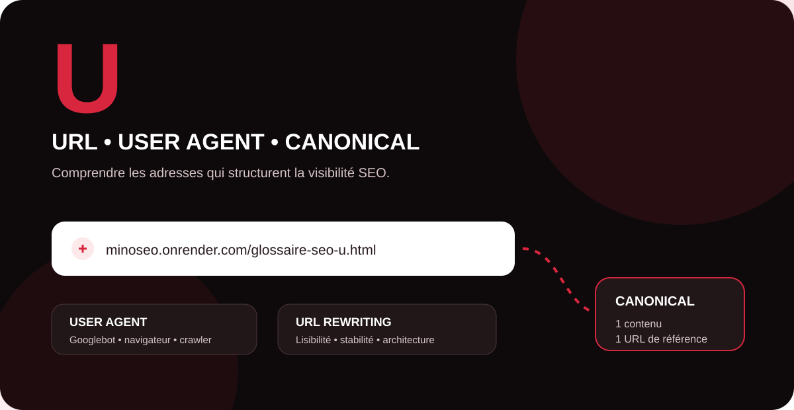

Une URL n’est pas qu’une adresse technique. Elle participe à l’architecture d’un site, au crawl, à la gestion des contenus similaires et à la compréhension du parcours par les utilisateurs. Pour une stratégie SEO et GEO robuste, il est utile de distinguer la forme d’une URL, sa version canonique et la manière dont les robots accèdent à la ressource.

url rewriting
L’URL rewriting, ou réécriture d’URL, est une technique qui permet de présenter une adresse web plus propre ou plus descriptive tout en faisant correspondre cette adresse à une ressource ou une route technique du serveur. Elle peut par exemple transformer une URL complexe remplie de paramètres en une adresse courte, stable et compréhensible.
En SEO, l’intérêt n’est pas de « mettre des mots-clés partout », mais d’obtenir une architecture cohérente. Des URL descriptives aident les utilisateurs à anticiper le contenu d’une page et simplifient la gestion du site. Google recommande des structures simples, logiques et lisibles, avec des mots descriptifs lorsque cela est pertinent.
Quels sont les points de vigilance ?
Une réécriture mal configurée peut créer plusieurs URL pour un même contenu, des boucles de redirection, des erreurs 404 ou une multiplication des paramètres. Après une refonte d’URL, il faut donc contrôler les redirections permanentes, les liens internes, le sitemap XML et les balises canonical.
user agent
Un user agent est une information envoyée dans une requête HTTP qui permet au serveur d’identifier le type de client qui demande une ressource : navigateur, application ou robot d’exploration. Dans le contexte SEO, cette notion est importante car les moteurs utilisent différents crawlers.
Google utilise notamment Googlebot Smartphone et Googlebot Desktop. Pour la majorité des sites, Google indexe principalement la version mobile du contenu. Le user agent peut être observé dans les logs serveur et aide à comprendre quels robots visitent le site, quelles URL ils demandent et comment le serveur leur répond.
User agent et robots.txt
Dans un fichier robots.txt, la directive User-agent sert à indiquer à quel robot s’appliquent les règles d’exploration qui suivent. Il faut cependant distinguer le contrôle du crawl de l’indexation : bloquer une URL dans robots.txt ne constitue pas, à lui seul, une instruction de désindexation.
Les chaînes de user agent peuvent également être imitées. Lors d’une analyse de sécurité ou de logs, l’identification d’un crawler ne doit donc pas reposer uniquement sur le texte de cet en-tête.
url canonique
Une URL canonique est l’URL considérée comme représentative d’un contenu lorsqu’il existe plusieurs adresses identiques ou très proches. Cette situation peut apparaître avec des paramètres, des filtres, des variantes HTTP/HTTPS, des pages accessibles par plusieurs chemins ou certaines configurations e-commerce.
Pour indiquer sa préférence, un site peut utiliser une balise rel="canonical", des redirections et une sélection cohérente des URL présentes dans le sitemap et le maillage interne. Ces signaux aident Google à regrouper les versions similaires et à consolider leurs signaux.
Canonical déclarée et canonical choisie par Google
La canonical déclarée par le site est une indication forte, mais ce n’est pas une obligation imposée au moteur. Google peut sélectionner une autre URL s’il estime que les signaux techniques et le contenu indiquent une version plus représentative. La Search Console permet de comparer, lors d’un diagnostic, la canonical déclarée par l’utilisateur et celle sélectionnée par Google.
robots.txt. Google doit pouvoir analyser les signaux nécessaires pour comprendre correctement les relations entre les URL.URL Google
L’expression « URL Google » n’est pas une balise SEO officielle. Dans la pratique, elle peut désigner l’URL d’une page telle qu’elle est découverte, explorée, indexée ou affichée par Google. Pour travailler correctement ce sujet, il faut donc distinguer plusieurs états d’une même adresse.
Une URL peut être connue de Google sans être indexée. Elle peut aussi rediriger vers une autre URL, être considérée comme doublon, ou voir une autre version choisie comme canonique. Google découvre la majorité des pages automatiquement grâce à ses robots et aux liens rencontrés sur le Web.
Comment vérifier une URL dans Google ?
Pour une page précise, l’outil d’inspection d’URL de Google Search Console est plus pertinent qu’une simple recherche manuelle. Il permet d’examiner des informations relatives à l’indexation et à la canonicalisation. Pour un suivi global, croisez ces diagnostics avec les rapports d’indexation, les sitemaps et les logs serveur.
Dans une logique GEO, conserver des URL stables, accessibles et clairement reliées à des contenus bien structurés facilite aussi la gouvernance de l’information : une marque sait quelle page constitue la référence pour une offre, une expertise ou une entité donnée.
Tableau de synthèse : les notions en U
| Terme | Rôle | Point de contrôle SEO |
|---|---|---|
| URL rewriting | Créer ou transformer des adresses web lisibles et cohérentes. | Redirections, stabilité, paramètres, liens internes et sitemap. |
| User agent | Identifier le client ou crawler qui effectue une requête HTTP. | Logs, robots.txt, Googlebot Smartphone/Desktop et réponses serveur. |
| URL canonique | Désigner la version représentative parmi des contenus identiques ou proches. | rel="canonical", redirections, sitemap et cohérence du maillage. |
| URL Google | Expression pratique liée à la façon dont Google découvre et traite une URL. | Inspection d’URL, indexation, canonical choisie et accessibilité. |
Besoin de fiabiliser l’architecture SEO de votre site ?
MinoSeo audite vos URL, redirections, canonicals, maillage interne et signaux d’indexation pour construire une base technique solide pour le SEO et le GEO.
Demander un audit gratuit